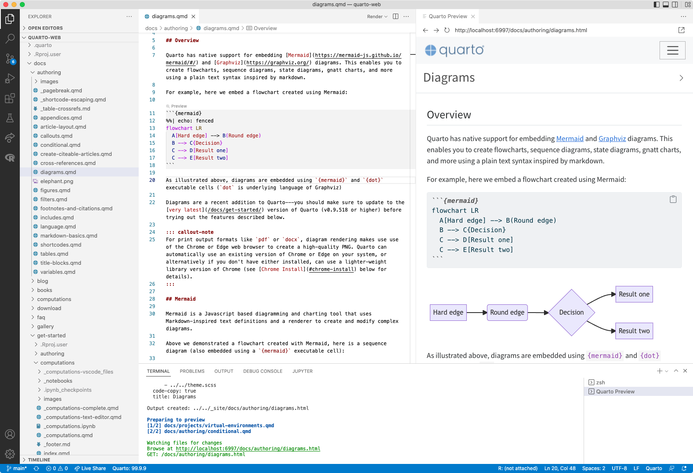

What is Quarto?
An open-source, scientific and technical publishing system
Quarto is the next generation of R Markdown
it unifies and improves the R Markdown ecosystem
it extends it for people who don’t know R Markdown

Artwork from “Hello, Quarto” keynote by Julia Lowndes and Mine Çetinkaya-Rundel, presented at RStudio Conference 2022. Illustrated by Allison Horst.
How to use Quarto?
Quarto integrates with other tools.



Quarto Workflow



Focus: Typst CSS for nice table output in PDF
New PDF rendering through Typst (https://typst.app)
format: typstThis is the quickest way to do PDF with already nice features !
# Producing a HTML Table with CSS styles
library(gt)
temps <- data.frame(
year = c(1920:1924),
Jan = c(40.6, 44.2, 37.5, 41.8, 39.3),
Jun = c(58.5, 58.7, 57.8, 52.7, 57.7)
)
nice_col <- scales::col_numeric(
colorspace::diverge_hcl(
n = 9, palette = "Green-Orange"
), domain = c(35, 62)
)
gt(temps) |>
data_color(
columns = c(-year),
fn = nice_col
)
Focus: Shortcodes
Quarto specific syntax to include content: https://quarto.org/docs/authoring/shortcodes.html
Let's add some sample image !
placeholder is one of the built-in shortcodes
Let’s add some sample image !
![]()
Shortcodes is among what is extensible using Quarto Extensions